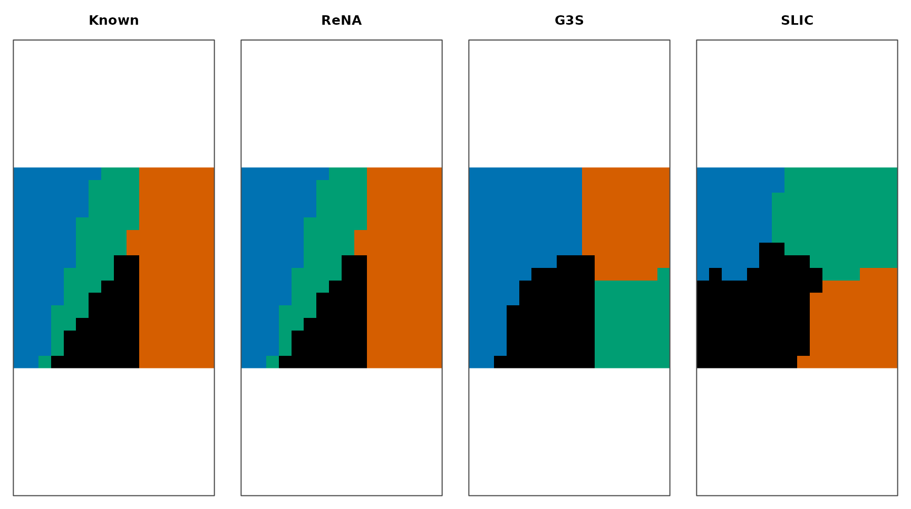
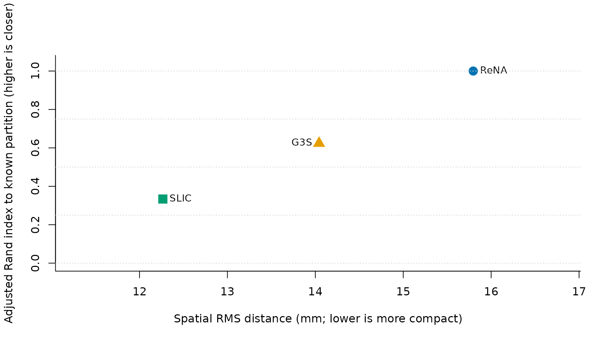

What makes a comparison fair?
Method comparison only makes sense when every result uses the same
included voxels and physical geometry. It also needs named estimands:
parcel count and size, spatial dispersion in millimetres, or temporal
coherence from the original voxel time series.
compare_cluster4d() verifies the shared provenance before
computing those quantities.
We use one deterministic volume with known labels. This gives us an additional simulation-only estimand—agreement with the known partition—without pretending that synthetic recovery proves performance on real data.
syn <- generate_synthetic_volume(
scenario = "gaussian_blobs", dims = c(16, 16, 8),
n_clusters = 4, n_time = 40, noise_sd = 0.08, seed = 42
)How do you hold inputs constant?
Here ReNA, G3S, and SLIC all receive K = 4 and 26-neighbor
connectivity. Their other defaults remain method-specific, so this is a
controlled workflow example, not a tuned leaderboard.
preserve_k = TRUE asks SLIC to repair its final partition
to the requested count.
rena_fit <- cluster4d(
syn$vec, syn$mask, 4, method = "rena",
connectivity = 26, parallel = FALSE
)
g3s_fit <- cluster4d(
syn$vec, syn$mask, 4, method = "g3s",
connectivity = 26, parallel = FALSE
)
slic_fit <- cluster4d(
syn$vec, syn$mask, 4, method = "slic",
connectivity = 26, parallel = FALSE, preserve_k = TRUE
)
The known middle axial slice beside three fitted partitions. A one-to-one maximum-overlap assignment aligns the four arbitrary fitted IDs to the four known colors without merging predicted parcels; this display-only relabeling does not change any metric.
Which quantities are you comparing?
The call below evaluates all three methods on the same support. Lower
spatial RMS distance means voxels lie closer to their final parcel
centroid. Temporal pairwise correlation is the mean Pearson correlation
over all unordered voxel pairs within parcels; it is calculated from
feature_mat, not from parcel centers.
comparison <- compare_cluster4d(
fits,
metrics = c("summary", "spatial_dispersion", "temporal_coherence"),
feature_mat = feature_mat
)
comparison
#> Method N_Clusters Min_Size Max_Size Mean_Size SD_Size Spatial_RMS_Distance_mm
#> 1 ReNA 4 303 738 512 177.8970 15.79605
#> 2 G3S 4 345 682 512 155.7926 14.04236
#> 3 SLIC 4 416 637 512 107.0420 12.26536
#> Temporal_Pairwise_Correlation
#> 1 0.9076958
#> 2 0.6714732
#> 3 0.4781601| Method | ARI_to_known | Spatial_RMS_mm | Temporal_correlation | |
|---|---|---|---|---|
| ReNA | ReNA | 1.000 | 15.80 | 0.908 |
| G3S | G3S | 0.624 | 14.04 | 0.671 |
| SLIC | SLIC | 0.334 | 12.27 | 0.478 |

Agreement with the known synthetic partition versus physical compactness. Up indicates greater agreement; left indicates smaller spatial RMS distance. No single direction optimizes both estimands here.
On this fixture ReNA recovers the known partition, while SLIC yields the lowest spatial dispersion. Those statements describe these evaluated outputs only. Real method choice should be repeated across representative subjects, masks, resolutions, and stability perturbations using estimands chosen before tuning.
What should you compare next?
- Read Choose parameters before tuning each method.
- Read Validate and compare for structural validation and pairwise partition agreement.
- Read Benchmark methodology for performance measurement rather than inferring speed here.